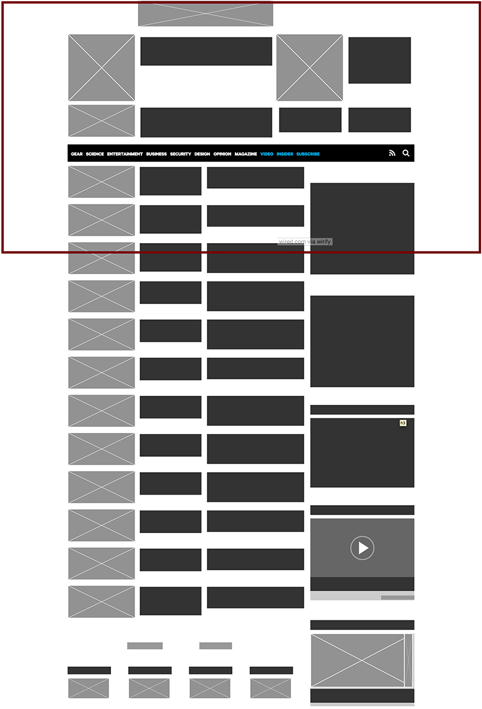
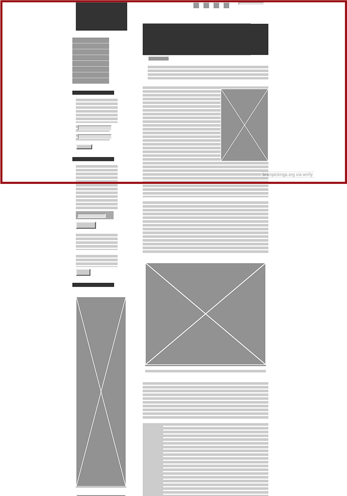
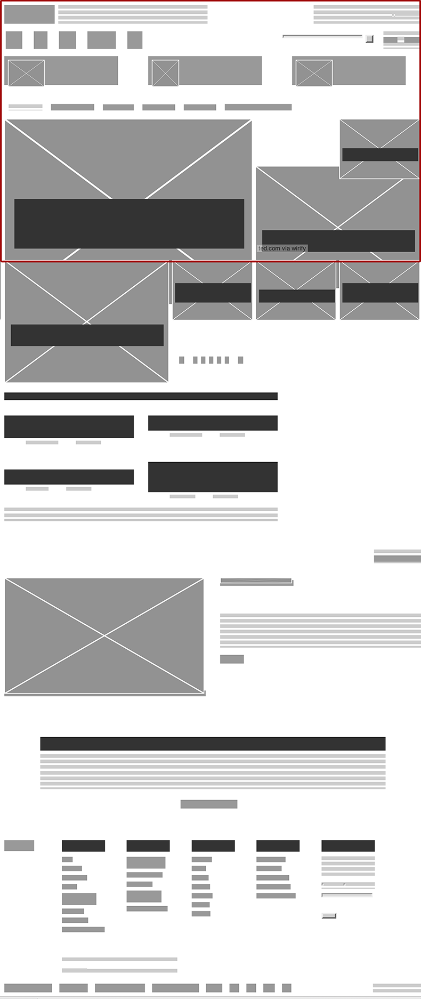

Wireframing
The web pages that I chose are only some of the ones that I like. One thing they have in common is that they are not devised to interact with the user as a solution to a concrete problem, like an email client, public services portal or a mapping web app. These web pages are content providers, without forms to be filled, upload features or any other possibility of input other than comments. They are mainly aimed at providing different types of content, so you could say they aim at the human desire to be informed, be it on current affairs, or issues of innovation, self-improvement, etc. Aimed at similar "problems", they face similar challenges which in my opinion is being able to present large amounts of articles, videos, presentations, etc. in a way that is not overwhelming but engaging to the visitor. The red frames mark the area of the website that is displayed before any scrolling is done.
Wired
Wired is an online version of a technology magazine. They publish articles on all things tech and innovation, spanning topics as ample as programming, hardware, military current affairs, photography, biology, health, auto industry and many others. From the wireframe you can see that it is a very clean, roomy design. Yes, there are a LOT of elements and usually that would seem overcrowded but considering the massive amount of information they pack and the complexity to avail all that information orderly and clearly I stand by my initial opinion.
Brain pickings
Brain pickings focuses on topics such as literature, love, design, philosophy, music and personal develpment. They call themselves a "human-powered discovery engine for interestingness, a subjective lens on what matters in the world and why, bringing you things you didn’t know you were interested in — until you are". It was originally a newsletter and it seems they did not make a full transition from that format. In the homepage there is a succesion of full articles and a sidebar that, apart from the web's sections, sports a large number of "must reads" and "labors of love" (designs, art pieces). This makes for a very long webpage, with most of the relevant content out of view and too many elements on the sidebar. It would benefit from an approach more similar to Wired or at least a reduction of the "must reads" and "labors of love" on the sidebar to a few top choices.
TED
Ted.com is the website for a nonprofit devoted to spreading ideas, usually in the form of short, powerful talks (18 minutes or less). TED began in 1984 as a conference where Technology, Entertainment and Design converged, and today covers almost all topics — from science to business to global issues — in more than 100 languages. Ted has another good approach to present an extensive wealth of information in a way that doesn't drown the user. As you can see below, what is displayed upon opening the site are a few videos, sized by relevance. The top part of a second row is displayed so you know there are more videos and can scroll to them, without having too many videos when you start out. The interesting part is that you can also scroll to the sides, revealing an identical structure but with a completely new sets of videos, producing 5 main pages in one, all with a manageable amount of info and a clear presentation.
